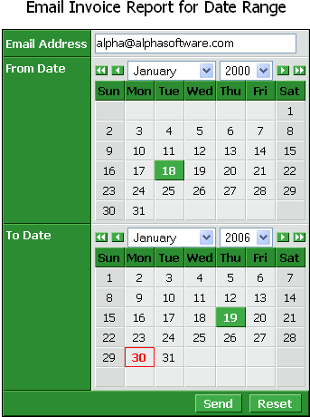

Filtering, Printing, and Emailing a Report
This topic describes how to create a dialog component that accepts an email address, start date, and end date, uses the dates to create a filter, prints the filtered report to a PDF file, and then emails the PDF file.
Create the Dialog
The first step is to create a dialog component with a TextBox control named email_address and two Calendar controls named from_date and to_date.
Place this control on a page. In this example I used the HTML Editor to add a heading above the component. Your component might look like this.

The next step is to display the component's Form > Properties page.
Click
 in the Server Events > AfterValidate property to display the Form Events dialog. Enter the script (without the intervening comments).
in the Server Events > AfterValidate property to display the Form Events dialog. Enter the script (without the intervening comments).
This section of the script uses EVAL_VALID() to check that email_address, from_date, and to_date have values. If any them do not have a value, the script exits by jumping to skip_report: .
IF eval_valid("email_address") = .f. Then goto skip_report end if IF eval_valid("from_date") = .f. Then goto skip_report end if if eval_valid("to_date") = .f. Then goto skip_report end if |
Next, the script checks that from_date and to_date have meaningful values. Note, while from_date and to_date are defined as date variables on the dialog, they return character values.
if (from_date = "") then from_date = dtoc( date() ) end if if (to_date = "") then to_date = dtoc( date() ) end if if ( ctod(from_date) > ctod(to_date) ) then goto skip_report end if |
This section of the script generates a report containing the records selected by from_date and to_date. It saves the report to a temporary file in a session folder. Note, the Application Server automatically creates the session folder and then deletes the folder and its contents when your session ends. Also note how the filter expression converts the character date values into proper date values using CTOD() and then quotes them using S_QUOTE().
dim filter as C dim order as C dim filename as C dim message as P filter = "invoice_header->date >= " + s_quote( ctod(from_date) ) + " .and. invoice_header->date <= " + s_quote( ctod(to_date) ) order = "invoice_header->date" filename = session.session_folder + "tempreport.pdf" filename = report.saveas("Invoice", "pdf", filter, order, filename, .f.) |
This section of the script sends the report created above. Note, the use of EMAIL_SEND2(), which is appropriate for use in web applications. The message dot variable has many optional parameters, but this code sample illustrates the minimum required.
message.to = email_address message.from = "alpha@alphasoftware.com" message.subject = "Invoice Report for " + to_date + " to " + from_date message.Attachments = filename message.message = "Invoice report is attached" email_send2(message, "Default") skip_report: |
 Note : The second parameter of the EMAIL_SEND2() function references a profile named "Default". This is the actual name of a profile defined by going to View > Settings > Email and defining and saving a profile. This profile does not assume that you are using the Alpha Five email client. Rather, it defines the information needed to connect with your email server and send a message without user interaction.
Note : The second parameter of the EMAIL_SEND2() function references a profile named "Default". This is the actual name of a profile defined by going to View > Settings > Email and defining and saving a profile. This profile does not assume that you are using the Alpha Five email client. Rather, it defines the information needed to connect with your email server and send a message without user interaction.
See Also